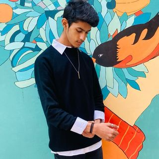

|  |
Aditya BhatiStudent at Thapar Institiue of Technology and Engineering I am in my 3rd year Currently pursueing Electronics and Computer Engineering |
Research Intern, Personalised Cloud Storage
Mentors: Kulbir Singh, Shishir Singh, Amit Mishra
Creating a Personalised Cloud using HTML, CSS, JS, Python, FLASK, NGINX and MySQL for Backing up and Saving of data from local server.